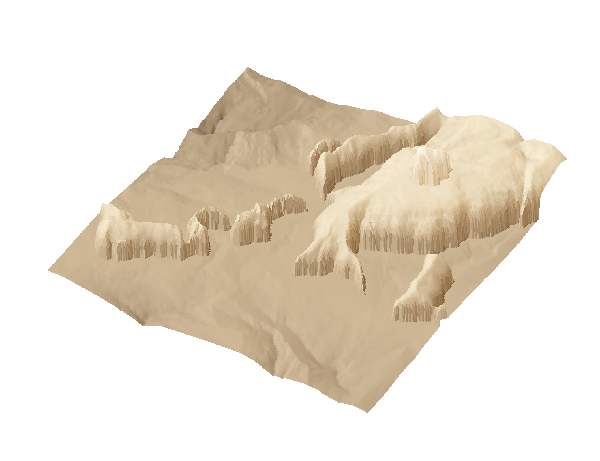
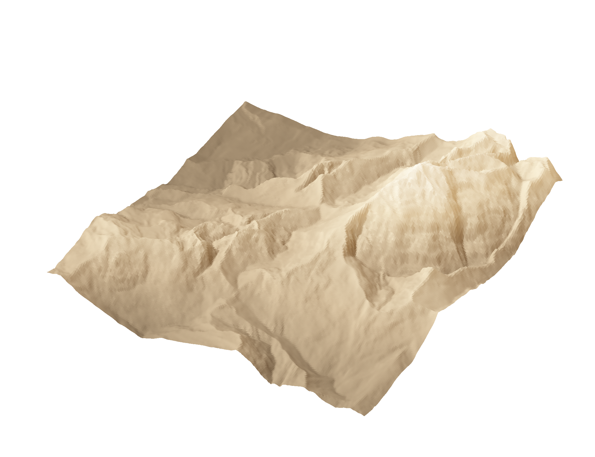
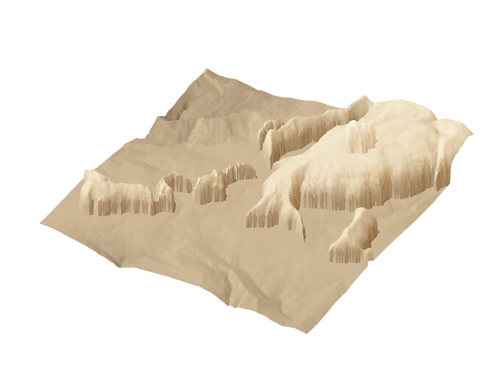
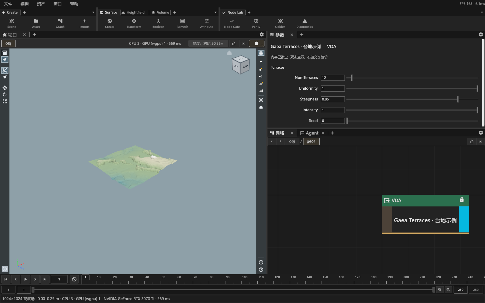
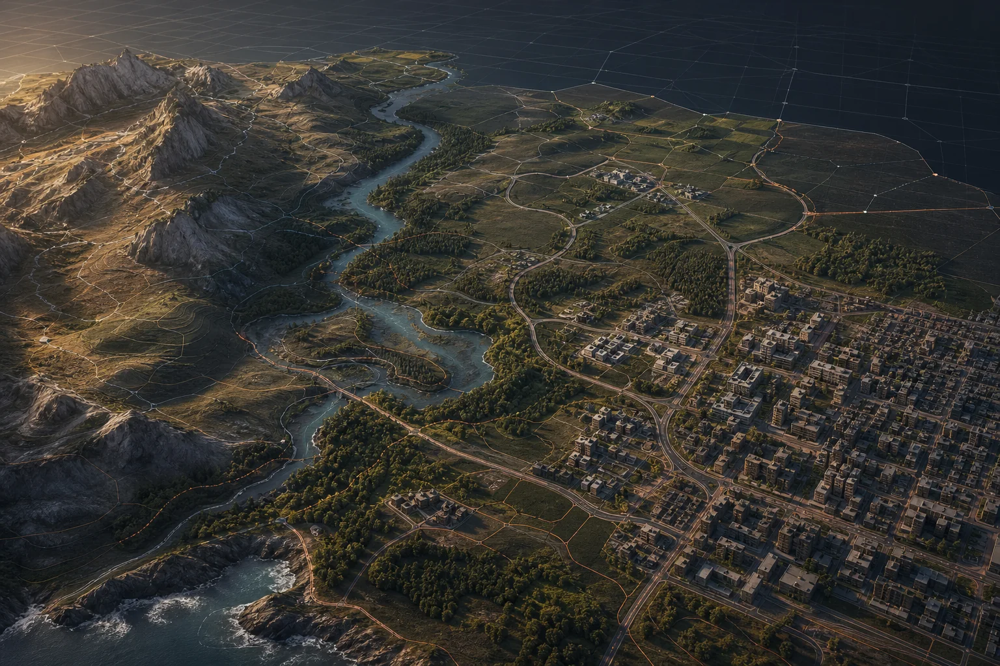

从意图开始
先明确想塑造什么，再使用当前已经实现的工具，逐步构建和验证。
AI NATIVE WORLD CREATION
一种正在生长的创作方式。
与 Agent 协作，用程序化工具塑造世界，
也始终保留亲手修改的自由。
技术预览开发中 · 从地形开始

01 从真实结果认识 Vesta
把连续的山脊，变成层叠的岩台。
变化来自可调整的参数，
每一层，都有迹可循。


图像来自 Vesta CLI 导出的 512 × 512 高度场，由相同相机与光照绘制。两图共用 20% 显示起伏以观察地貌，原始高度样本未改动。拖动仅比较预先计算的图像，不在浏览器中实时运行 Vesta。Terraces 使用 CPU；示例链中的 Ridge 支持独立 GPU 实现。查看图像来源记录 ↗
02 创作方式
Agent 帮助推进工作，
程序化资产留下创作过程。
生成之后，仍然可以继续编辑。
先明确想塑造什么，再使用当前已经实现的工具，逐步构建和验证。
World Builder 连接独立 Agent。Agent 查询上下文、调用工具，世界工作区保持自己的状态。
查看 Graph，调整公开参数，把有效的过程封装成 VDA，供下一次创作继续使用。
会话 · 模型 · 历史
连接当前项目与工作区
世界上下文 · 工作区 · 预览
其他 Agent 通过各自适配器接入，仍在规划。
03 一个 Vesta，多种创作入口
世界工作区、Agent 与专业编辑器，
围绕同一套计算与资产能力协作。

工作区方向示意 · 并非完整功能截图
独立原生应用与 Vesta Agent 连接已实现。Board 有参考板原型；其他创作工作区仍以布局骨架为主，完整搭建与交付工具尚在建设。
独立 Agent / 当前已接通
每次主动连接，在当前项目下新建会话。
断开连接，世界上下文和 Agent 会话各自保留。
这些由 Agent 管理，Builder 保存连接引用。连接本身不会自动向模型发送请求。

THE HORIZON / 长期方向
地形、道路、建筑与生态，逐步形成可组合的创作能力。
04 世界正在形成
Vesta 处于技术预览开发阶段。
我们从可验证的能力出发，
逐步把它们连接成创作体验。
已有验证切片
正在建设
长期方向
以上为局部能力进展，不代表完整产品、全部 GPU 算子或生产交付流程已经验收。更新基准：2026.10.16。
WORLDS IN THE MAKING.
从地形开始，把创作的可能性一步步展开。
回到开头